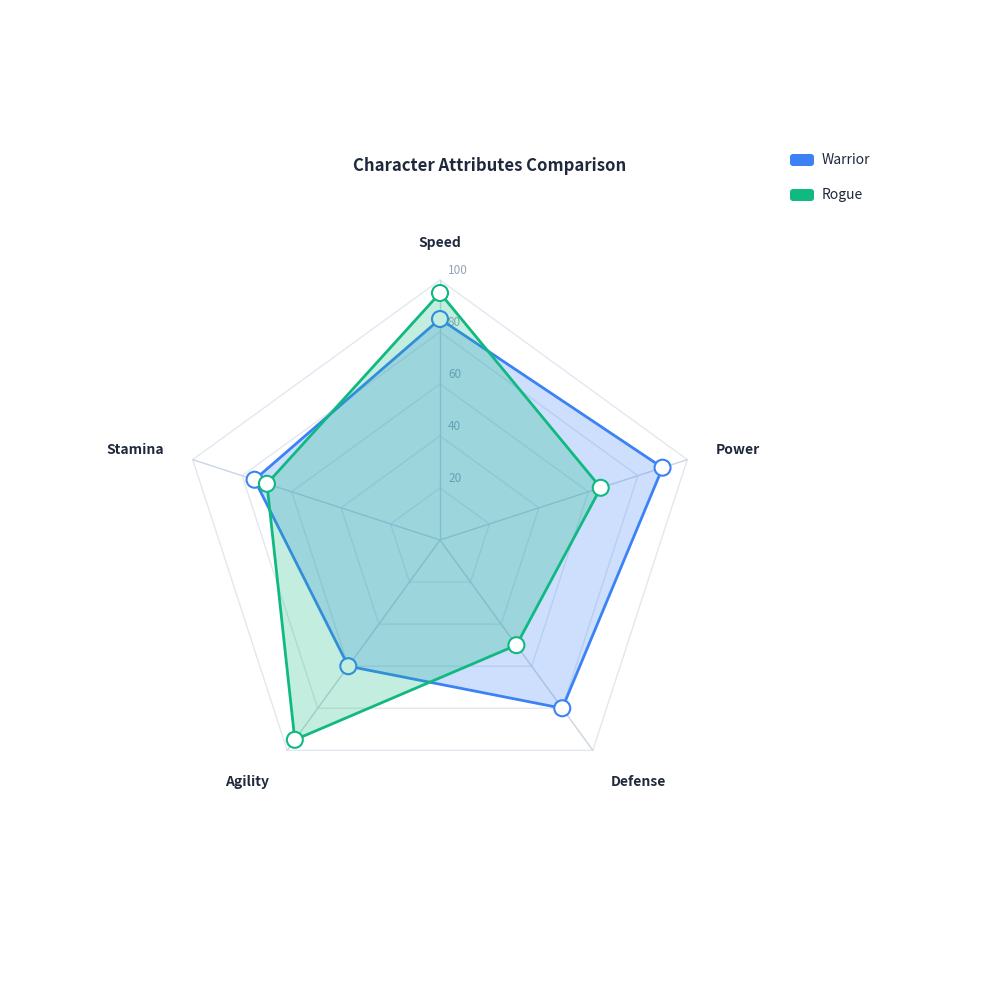
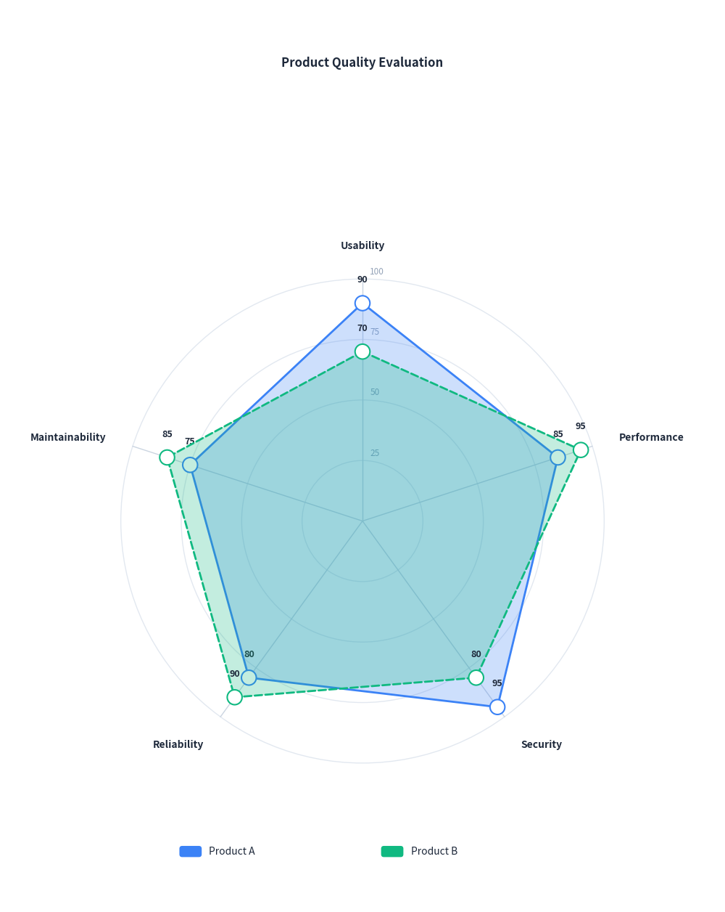

Radar Chart Guide
drawlib.charts.RadarChart provides 2D radar (spider web) charts for multivariate performance analysis, skill evaluation, and multi-dimensional profile comparison.
1. Quick Start: Character Attributes Comparison
Compare multiple profiles across symmetric radial dimensions with polygon gridlines and automatic legend layout:
from drawlib import canvas
from drawlib.charts import RadarChart
canvas.initialize()
chart = RadarChart(
categories=["Speed", "Power", "Defense", "Agility", "Stamina"],
radius=26.0,
title="Character Attributes Comparison",
legend_position="right",
)
chart.add_series("Warrior", [85, 90, 80, 60, 75])
chart.add_series("Rogue", [95, 65, 50, 95, 70])
chart.draw(xy=(10.0, 10.0))

2. Circular Grid & Data Values
Use grid_shape="circle" for concentric circular contours, customize line_style="dashed", and show numeric labels at each vertex with show_values=True:
from drawlib import canvas
from drawlib.charts import RadarChart
canvas.initialize()
chart = RadarChart(
categories=["Usability", "Performance", "Security", "Reliability", "Maintainability"],
radius=26.0,
grid_shape="circle",
levels=4,
max_value=100.0,
title="Product Quality Evaluation",
legend_position="bottom",
show_values=True,
)
chart.add_series("Product A", [90, 85, 95, 80, 75])
chart.add_series("Product B", [70, 95, 80, 90, 85], line_style="dashed")
chart.draw(xy=(15.0, 6.0))

3. API Reference
RadarChart
| Parameter | Type | Default | Description |
|---|---|---|---|
categories |
list[str] |
Required | List of dimension/axis names (minimum 3). |
radius |
float |
25.0 |
Radius of the outer web boundary. |
min_value |
float |
0.0 |
Value at the center origin point. |
max_value |
float | None |
None |
Value at the outer perimeter. If None, calculated from data. |
levels |
int |
5 |
Number of concentric grid rings. |
grid_shape |
"polygon" | "circle" |
"polygon" |
Shape of concentric gridlines. |
show_grid_labels |
bool |
True |
Whether to display scale numbers along reference spoke. |
grid_label_format |
str | Callable | None |
None |
Formatter for grid scale values. |
grid_style |
Style | None |
None |
Style overriding concentric gridlines. |
spoke_style |
Style | None |
None |
Style overriding radial spoke lines. |
category_label_style |
Style | None |
None |
Style overriding category label typography. |
title |
str |
"" |
Chart title displayed at the top. |
title_style |
Style | None |
None |
Style overriding title typography. |
legend_position |
"auto" | "top" | "bottom" | "right" | "none" |
"right" |
Position of legend box. |
show_values |
bool |
False |
Whether to print numeric values next to series vertices. |
value_format |
str | Callable | None |
None |
Formatter for vertex values. |
value_label_style |
Style | None |
None |
Style overriding vertex value typography. |
width |
float | None |
None |
Optional container width override. |
height |
float | None |
None |
Optional container height override. |
Methods
add_series(name: str, values: list[float], color=None, fill_alpha=0.25, line_width=2.0, line_style="solid", show_points=True, point_shape="circle", point_size=0.8, style=None) -> RadarSeries: Register a data polygon.get_size() -> tuple[float, float]: Calculate overall bounding box dimensions.draw(xy: tuple[float, float] = (0.0, 0.0)) -> None: Render chart onto canvas.